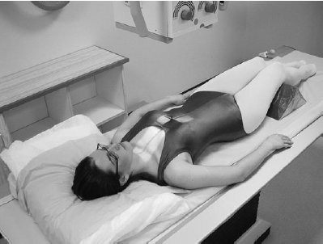

Thoracic Spine(AP)
Centering point:Direct the central ray at right-angles to the cassette and towards
a point 2.5 cm below the sternal angle.

Cassette Size:35cm x 43cm (17 x 14ins) larger patient
30cm x 35cm (14 x 14ins) smaller patient
Portrait
Exposure Factors:75kVp on
35MaS
FFD:100cm
Bucky/Grid:Moving or Stationary Grid
Filter:No
Collimation:Collimate tightly to the spine
Pathologies:Fractures, spondylolisthesis, bone lesions, osteoporosis, foreign bodies
Position of patient and cassette
- The patient is positioned supine on the X-ray table, with
the median sagittal plane perpendicular to the tabletop and
coincident with the midline of the Bucky.
- The upper edge of a cassette, which should be at least 40 cm
long for an adult, should be at a level just below the prominence
of the thyroid cartilage to ensure that the upper thoracic
vertebrae are included.
- Make exposure on arrested inspiration. This will cause the
diaphragm to move down over the upper lumbar vertebra,
thus reducing the chance of a large density difference appearing
on the image from superimposition of the lungs